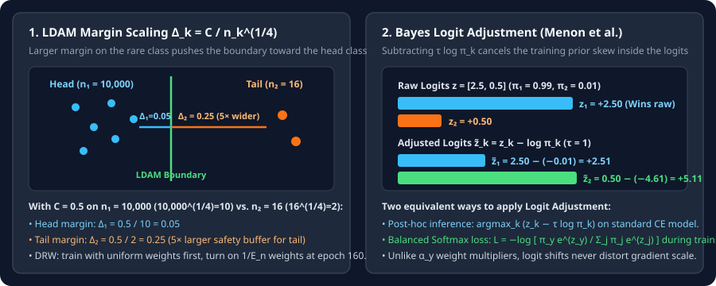

Margins and Logits: LDAM, Balanced Softmax, and Logit Adjustment
Derive class-dependent margins $\Delta_k\propto n_k^{-1/4}$ in LDAM with Deferred Re-Weighting, and derive Menon et al.’s Bayes-optimal Logit Adjustment $z_k-\tau\log\pi_k$ and Balanced Softmax.
Loss reweighting multiplies the gradient of every tail example by a scalar $\alpha_y$, which changes step sizes without directly moving the decision boundary. Margin and logit-adjustment methods instead shift the logits $z_k$ themselves—either enforcing a wider classification margin for rare classes (LDAM) or subtracting the log class prior $\log\pi_k$ so the softmax classifier is Fisher-consistent for balanced accuracy (Logit Adjustment and Balanced Softmax).
1. LDAM: why rare classes need a $n_k^{-1/4}$ larger margin
In binary classification between class $1$ ($n_1$ samples) and class $2$ ($n_2$ samples), let $\gamma_1$ and $\gamma_2$ be the functional margins of the two classes ($\gamma=\gamma_1+\gamma_2$). Cao et al. (NeurIPS 2019) bound the balanced generalization error by the sum of the two classes’ Rademacher margin bounds:
To find the margins $(\gamma_1^*,\gamma_2^*)$ that minimize this bound for a fixed total margin $\gamma=\gamma_1+\gamma_2$, substitute $\gamma_2=\gamma-\gamma_1$ and set the derivative with respect to $\gamma_1$ to zero:
Subtracting $\Delta_y$ from the ground-truth logit $z_y$ inside cross-entropy gives the Label-Distribution-Aware Margin (LDAM) loss:
Because $\Delta_y$ is subtracted from $z_y$ during training, a rare class with small $n_y$ must produce a much larger raw logit $z_y\ge z_j+\Delta_y$ to achieve low loss—pushing the decision boundary away from the tail class and toward the head class. Cao et al. pair LDAM with Deferred Re-Weighting (DRW): train with uniform class weights ($\alpha_k=1$) for the first $T_{\text{DRW}}$ epochs so the backbone learns clean features, then turn on Effective-Number weights $\alpha_k\propto 1/E_{n_k}$ in the final phase.

2. Derive Bayes-optimal Logit Adjustment and Balanced Softmax
Suppose a neural network trained on the natural imbalanced distribution $P^{\text{train}}(y=k)=\pi_k$ learns accurate posterior probabilities $P^{\text{train}}(y=k\mid x)\propto e^{z_k(x)}$. At test time, however, we want to minimize balanced error, where every class has uniform prior $P^{\text{bal}}(y=k)=1/K$ while the class-conditional distribution $P(x\mid y=k)$ stays unchanged. By Bayes’ rule:
Therefore, the Bayes-optimal classifier for balanced test accuracy does not pick $\arg\max_k z_k(x)$—it picks $\arg\max_k\bigl(z_k(x)-\log\pi_k\bigr)$! Menon et al. (ICLR 2021) introduce a temperature parameter $\tau>0$ (with $\tau=1$ exact Bayes) to give two complementary tools:
Watch the sign difference between training and post-hoc inference:
- Post-hoc inference ($z_k-\tau\log\pi_k$): The model was trained with standard softmax, so $z_k$ already absorbed $+\log\pi_k$. We subtract $\tau\log\pi_k$ at test time to remove that prior bias (since $\log\pi_{\text{tail}}\ll 0$, subtracting a negative number adds a large positive boost to tail logits).
- Logit-Adjusted / Balanced Softmax training ($z_k+\tau\log\pi_k$ inside the loss): During training we add $\tau\log\pi_k$ inside the softmax loss so the loss explicitly accounts for the class prior $\pi_k^\tau$, forcing the raw network output $z_k(x)$ to learn the balanced log-likelihood directly! At test time we simply predict $\arg\max_k z_k(x)$.
3. Worked numerical trace: $99{:}1$ skew on raw logits $z=[2.50, 0.50]$
Suppose class $1$ has $\pi_1=0.99$ ($\log\pi_1\approx -0.010$) and class $2$ has $\pi_2=0.01$ ($\log\pi_2\approx -4.605$). A test example produces raw logits $z_1=+2.50$ and $z_2=+0.50$:
4. PyTorch implementation: Balanced Softmax & LDAM
import torch
import torch.nn as nn
import torch.nn.functional as F
class LogitAdjustedCrossEntropy(nn.Module):
"""Menon et al. (ICLR 2021) / Balanced Softmax (Ren et al., NeurIPS 2020) when tau=1."""
def __init__(self, class_counts: torch.Tensor, tau: float = 1.0):
super().__init__()
priors = class_counts.float() / class_counts.sum()
self.register_buffer("logit_shift", tau * torch.log(priors.clamp(min=1e-12)))
def forward(self, logits: torch.Tensor, targets: torch.Tensor) -> torch.Tensor:
# During training, add tau * log(pi_k) inside the softmax denominator
return F.cross_entropy(logits + self.logit_shift, targets)
class LDAMLoss(nn.Module):
"""Cao et al. (NeurIPS 2019) Label-Distribution-Aware Margin Loss."""
def __init__(self, class_counts: torch.Tensor, max_m: float = 0.5, s: float = 30.0):
super().__init__()
m_list = class_counts.float().pow(-0.25)
m_list = m_list * (max_m / m_list.max())
self.register_buffer("m_list", m_list)
self.s = s
def forward(self, logits: torch.Tensor, targets: torch.Tensor, weight: torch.Tensor = None) -> torch.Tensor:
margins = torch.zeros_like(logits)
margins.scatter_(1, targets.unsqueeze(1), self.m_list[targets].unsqueeze(1))
return F.cross_entropy(self.s * (logits - margins), targets, weight=weight)5. Questions worth answering
Class weights $\alpha_y$ rescale the gradient magnitude of every sample from class $y$, causing huge step-size spikes on rare classes. Logit Adjustment shifts the target logit threshold by $\tau\log\pi_k$ while keeping every sample’s gradient bounded in $(-1,1)$.
Applying large tail weights from epoch $0$ distorts early convolutional/transformer representations before clusters form. Enforcing the $n_k^{-1/4}$ margin early shapes clean features first, and late reweighting adjusts the final decision boundaries.